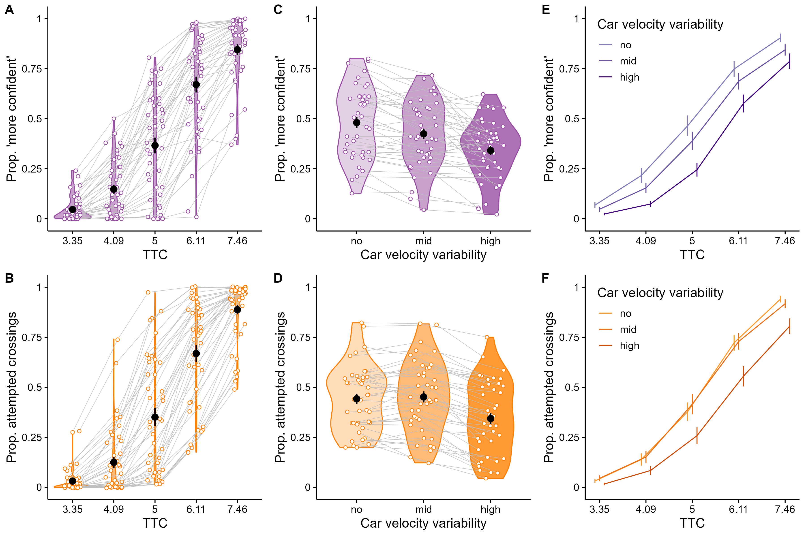
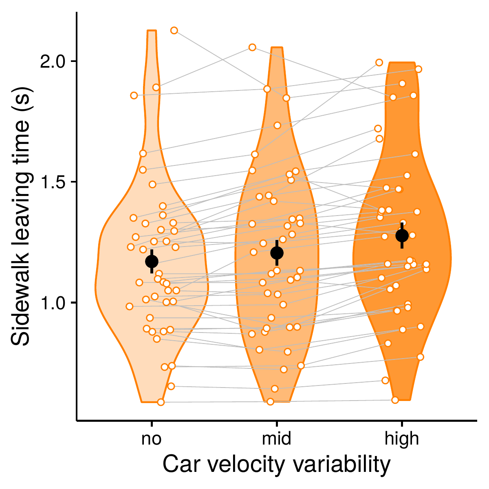
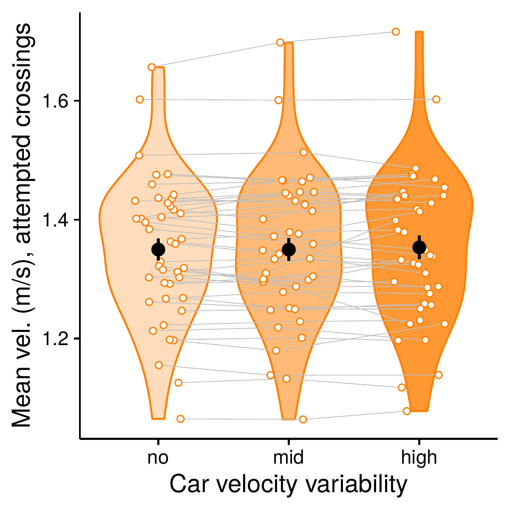
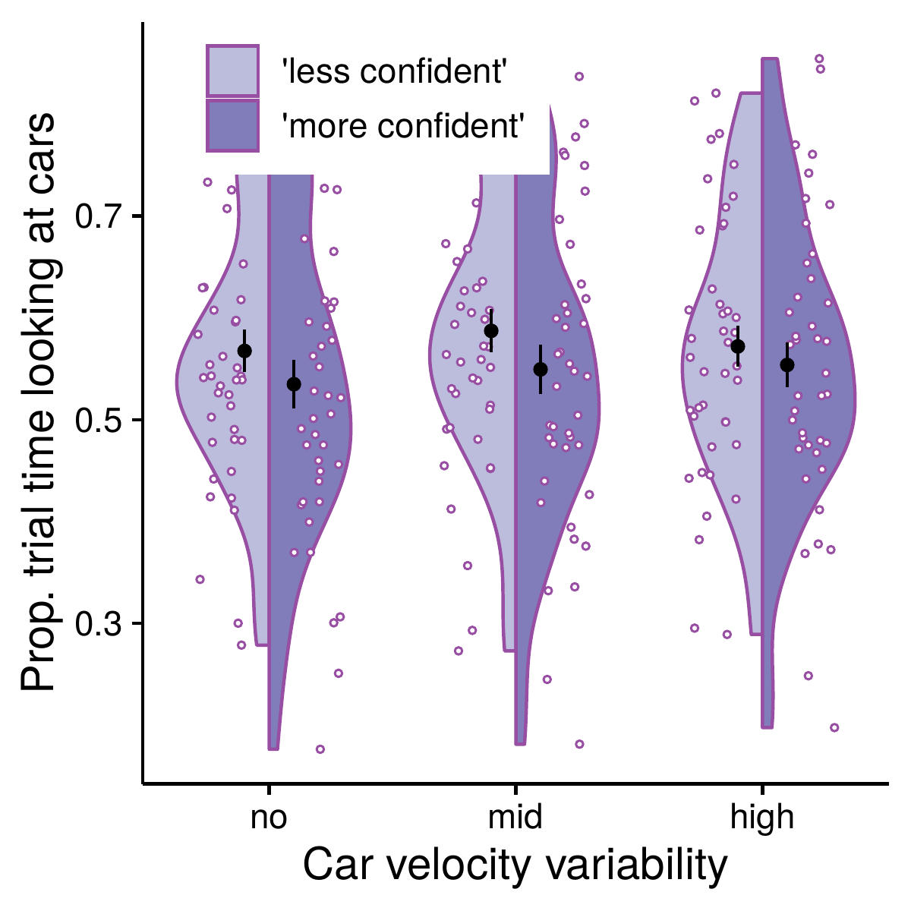
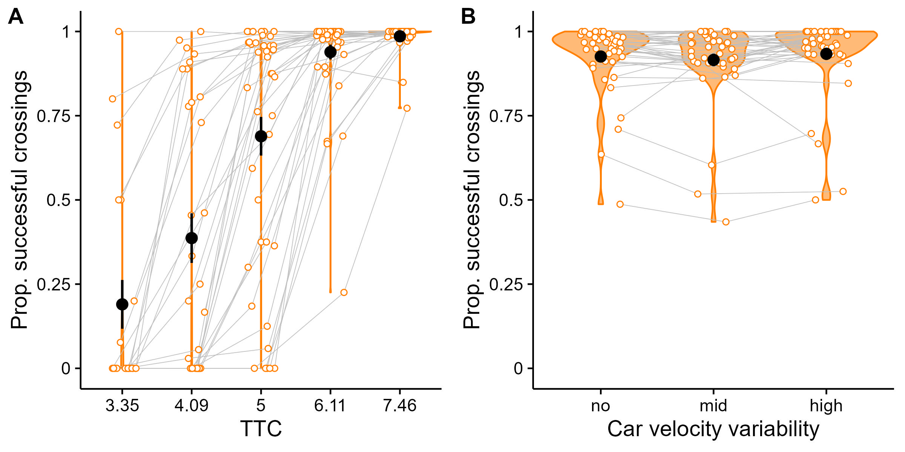

Imagine deciding whether to cross a street as cars approach: some evenly spaced and predictable, others erratic and unevenly spaced. Does that added unpredictability — even when it doesn't change your actual odds of making it across safely — change your decision? Your confidence? The way you physically move once you commit?
This project simulated exactly that scenario in immersive virtual reality with 44 participants, recording their decisions, confidence judgments, movement, and eye gaze at 90Hz, to find out whether environmental variability shapes behavior even when it's technically irrelevant to success.
Data collection: 44 participants completed a VR street-crossing task, with head position, gaze direction, and decisions recorded at 90Hz. I took part in data collection alongside the research team, and co-developed the full analysis pipeline in R together with another co-author of the paper — from data ingestion through modeling to final visualization.

As the time available to cross shrank, participants became less confident and less likely to attempt crossing — and this threshold shifted further right as the variability of the approaching cars increased, meaning people needed more time margin to feel safe in more unpredictable scenes.

Participants took longer to leave the sidewalk in high-variability trials, showing that environmental unpredictability doesn't just lower confidence — it measurably slows down the moment of committing to an action.

Despite starting later, participants in high-variability trials reached higher peak speeds — a compensatory strategy that kept their success rate high despite the added uncertainty.

Using 3D gaze-ray tracking, we found that participants who ended up feeling more confident spent proportionally less time visually fixated on the cars — consistent with faster, more efficient information processing before deciding.

Crossing success remained above 90% regardless of variability level — evidence that participants' behavioral adjustments (slower starts, faster movement) successfully offset the added environmental complexity.
This pipeline — combining multi-modal sensor data, statistical modeling, and clear visualization to explain why people make the decisions they do — transfers directly to product analytics, UX research, and any domain where understanding behavior from complex, noisy, real-world data matters.